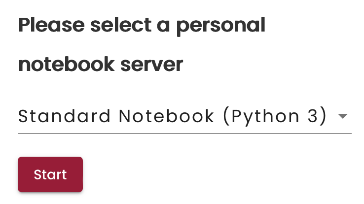
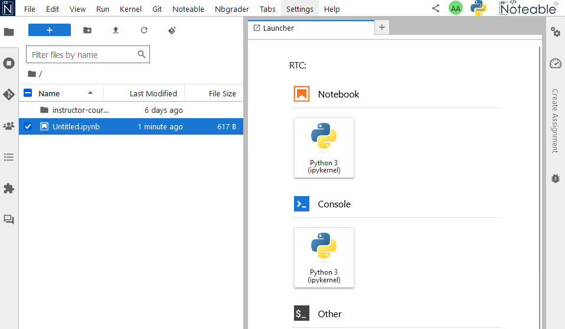
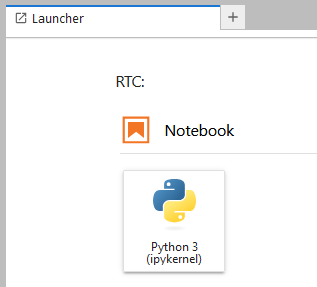
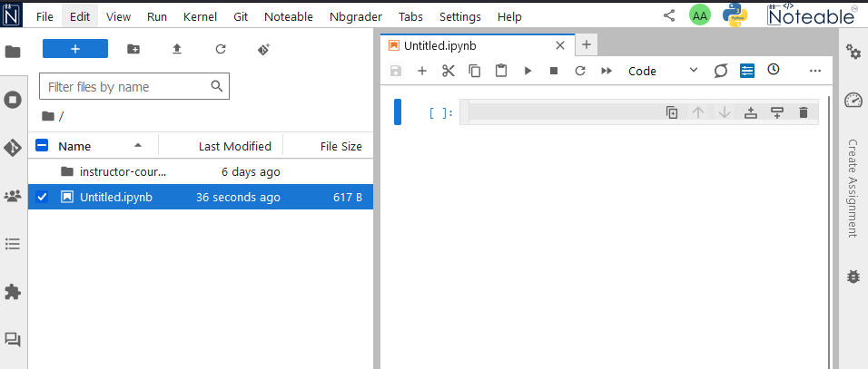
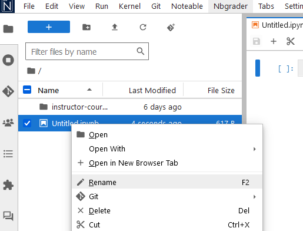
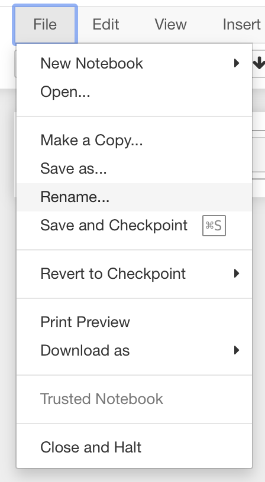
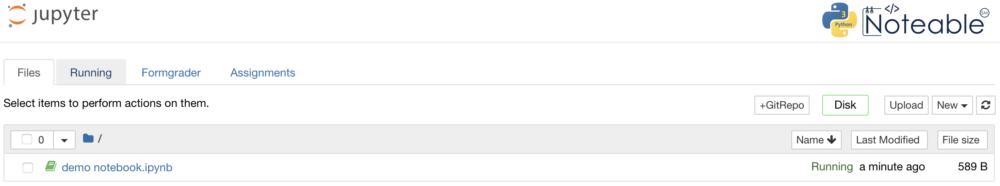
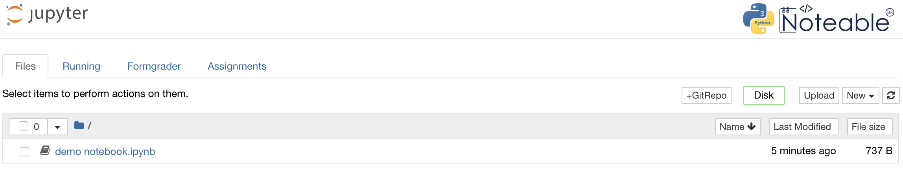
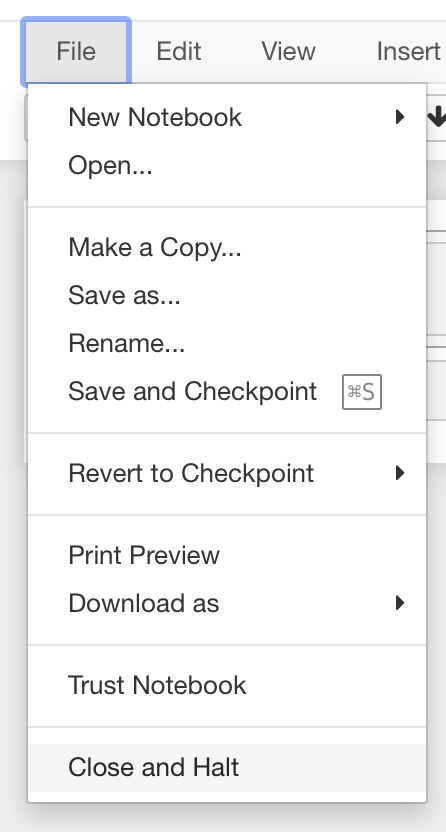
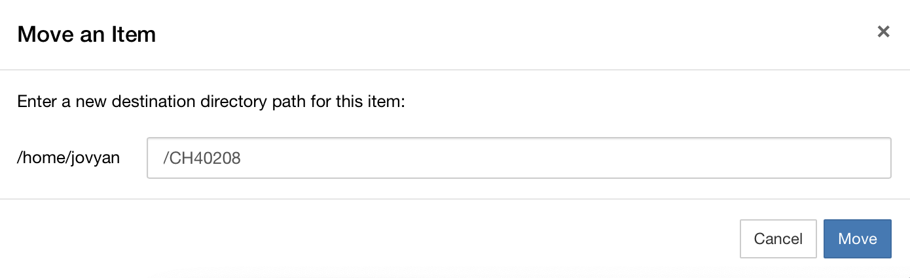

Getting started with Noteable#
For this course, you will be using Noteable to host and run your Jupyter notebooks.
Logging into Noteable#
Click on the Noteable link on the CH40208 Moodle page (under Orientation and Communication), or go to https://noteable.edina.ac.uk/launch.
{kind=link}
Select “Standard Notebook (Python 3)” and click “Start”.
{kind=link}
If this is the first time you have logged on to Noteable, you will see the following:

This is the Jupyter file browser. It shows you all of your files and folders saved in Noteable.
Creating a new Jupyter notebook#
To create a new Jupyter notebook, click on New (top right) and select Python3 (ipykernel).
{kind=link}
This will open a new Jupyter Notebook document in a new browser window, which should look like this:

Renaming notebooks#
We will look at using Jupyter Notebooks in more detail later. For now, notice at the top you have the text “Untitled”. This is a placeholder filename that has been assigned to this new Notebook you have just created. To rename your notebook, click on the title “Untitled” to open a Rename Notebook dialogue:

Rename your notebook to something more meaningful (e.g., “demo notebook”) by typing the new name in this dialogue box and hitting Enter or clicking Rename. You should then see the notebook name at the top of the screen change to the new name.
You can also rename a notebook by clicking on the “File” menu inside the Notebook interface, and selecting “Rename…”:
{kind=link}
Notebook management#
Switch back to the browser window containing the Jupyter file browser. You should now see your notebook (with its new name) in the list of files:

The notebook symbol to the left of the filename tells you that this file is a Notebook. The symbol is green because this Notebook is open (or “running”). You can also see the status of this Notebook on the righthand side as “Running”. The file browser also shows you how recently this notebook was modified and the size of the notebook on the disk.
Running notebooks uses resources (memory and CPU) on whichever computer you are running on. In this instance, these are servers run by Noteable. Having a large number of notebooks Running at the same time can consume a lot of resources and make your calculations run slowly. It is good practice to stop (Shutdown) notebooks that you are not currently working on or using to perform calculations. Closing the window that a notebook is running in does not shutdown that notebook (it will still have a green icon in the file browser).
You can Shutdown any running notebooks by selecting them in file browser (click the tick box to the left of the filename) and then clicking Shutdown:

Notice that the notebook icon next to the filename is now grey, indicating a notebook that is not running. The word “Running” has also gone from the righthand side of the file information row:

You can also close and shutdown a running notebook from the notebook window itself, by clicking on the File menu item and selecting Close and Halt:
{kind=link}
Using folders#
While you could keep all of your notebooks in your top-level folder (what you see when you first log in to Noteable), over time, this can make it difficult to find the specific notebook you are looking for, so it is better to organise your notebooks using folders.
In the Jupyter file browser window, click New and then Folder to create a new folder.

You can rename a Folder (or a file, unless it is a currently running notebook) directly from the Jupyter file browser. Click the check box to the left of the file name and then click Rename. Then rename your folder to “CH40208”.
You can now move your first notebook into this folder.
Select the notebook and click Move, then type the name of the destination folder (“CH40208”) into the “Move an Item” dialogue box, and click Move:

You should now have a nice organised top-level directory.
If you click into the CH40208 folder you should see your notebook file.
You will also see an entry at the top of the file list with a folder icon and the name ...
These two dots are shorthand for “go up one level” in the folder hierarchy.
Clicking this folder name (the two dots) will take you back to the top-level directory.

Closing down and reconnecting#
Close all of your Noteable browser windows. Your folders and files are saved on the Noteable server. You can reconnect to the server and see your folders and files by clicking again on the Noteable link on the CH40208 Moodle page.